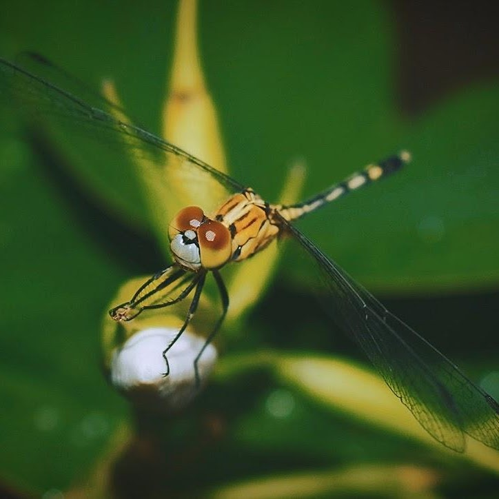

Anubhab Mukherjee
Hi, I am a postgraduate in Astrophysics. This is where I disseminate knowledge and reflect on subtle moments of my life.


Hi, I am a postgraduate in Astrophysics. This is where I disseminate knowledge and reflect on subtle moments of my life.
